The Nylon Fly
A dialogue between a genetically engineered plastic-eating fly and the scientist tasked with eradicating it. The fly questions why the scientist won't leave: "I was born here like you." When asked about its origins, it responds: "You brought me here with you."
The work examines invasive species, wilderness preservation, and the mythology of pristine nature. Rather than seeking to control the land, the scientist must confront historical responsibility and negotiate coexistence with the organism they helped create. The premise holds that "nothing is a wilderness, but everywhere is as precious as the most celebrated national park."


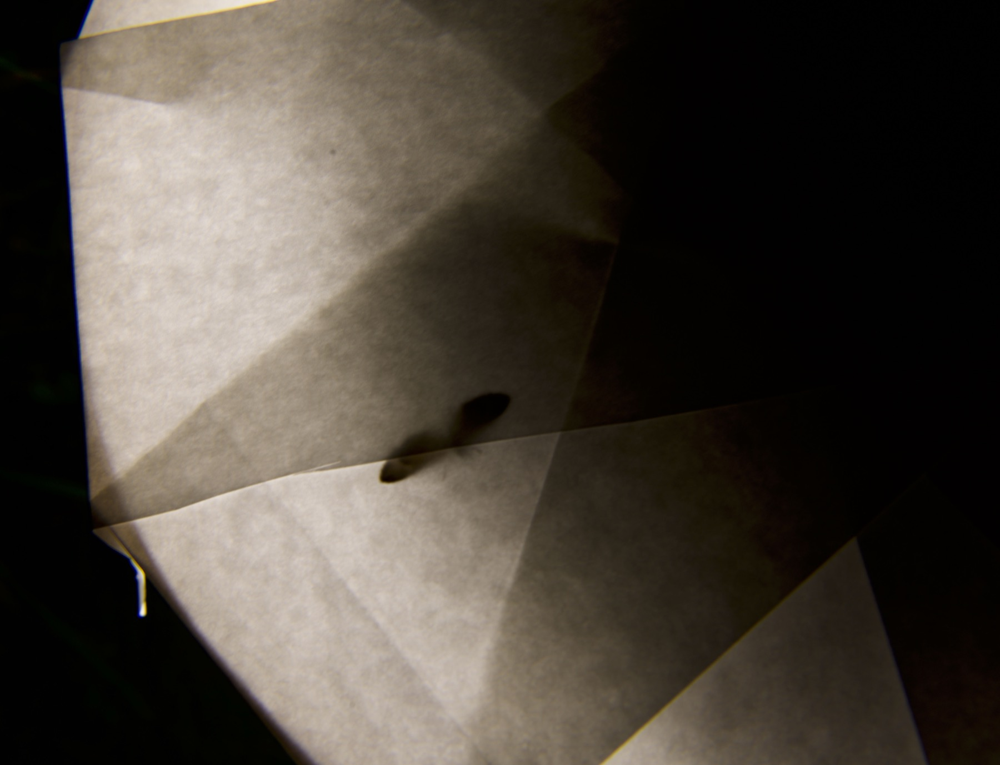

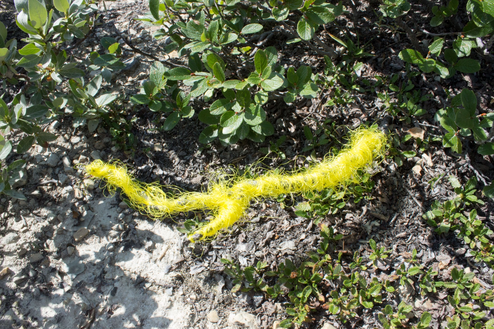
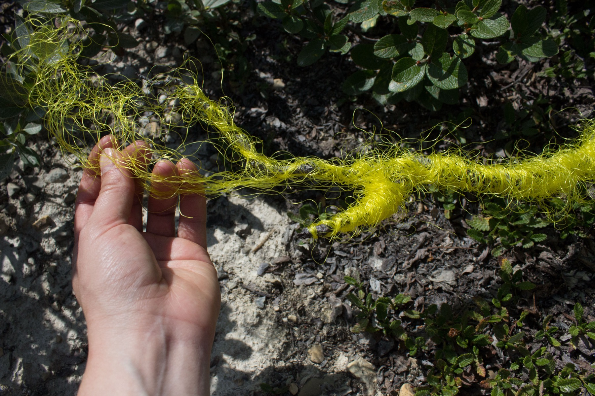
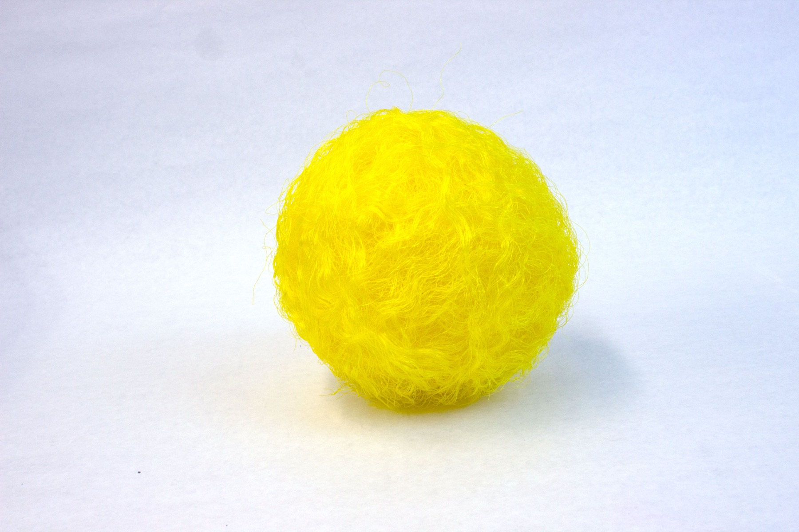
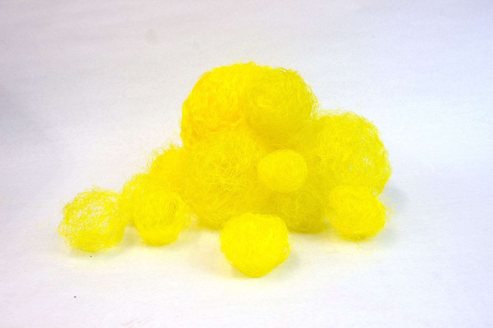

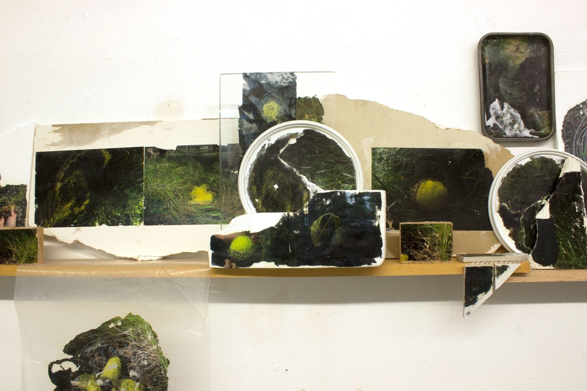
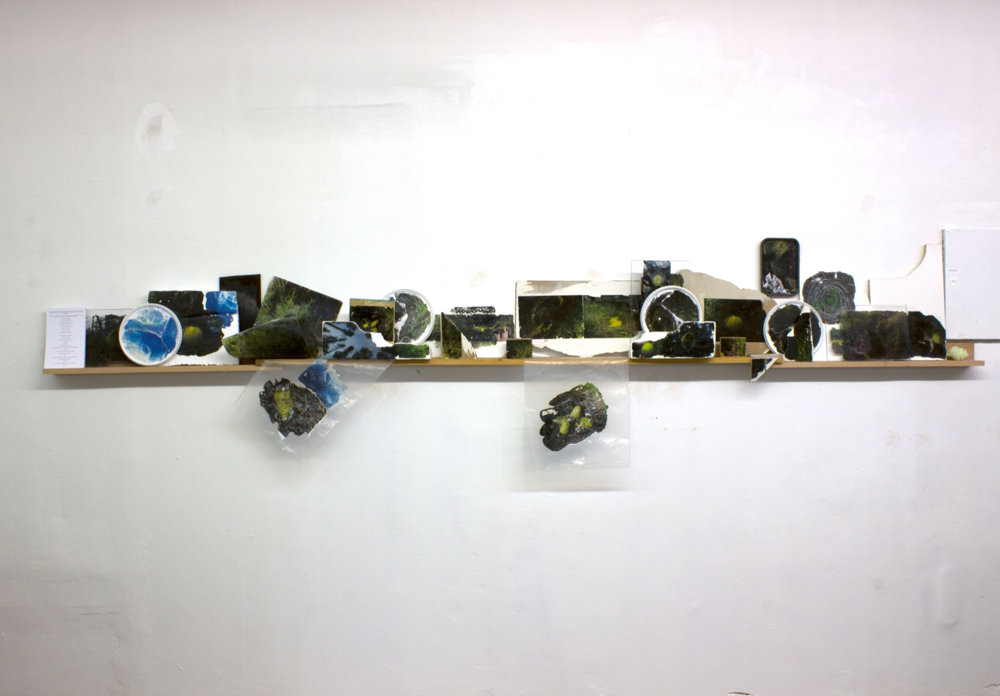

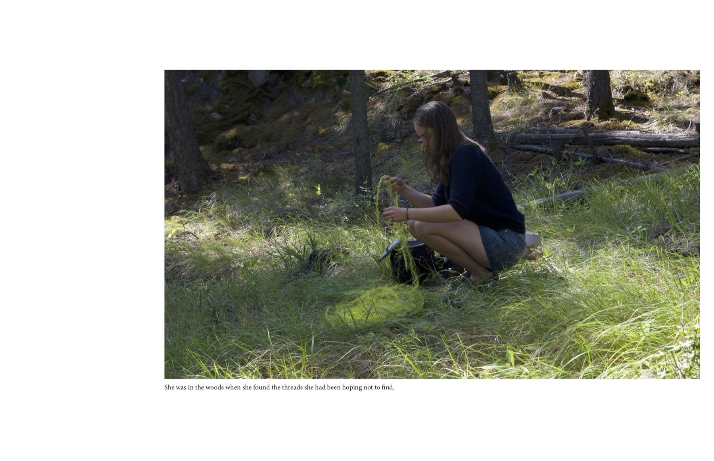
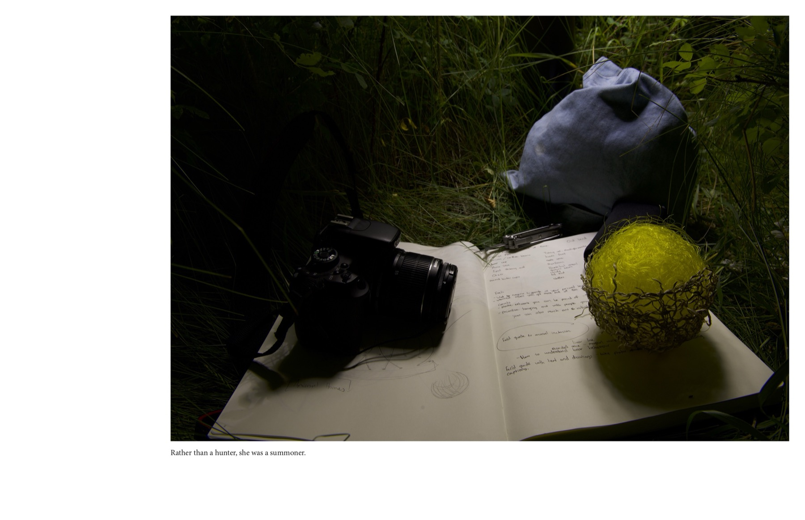
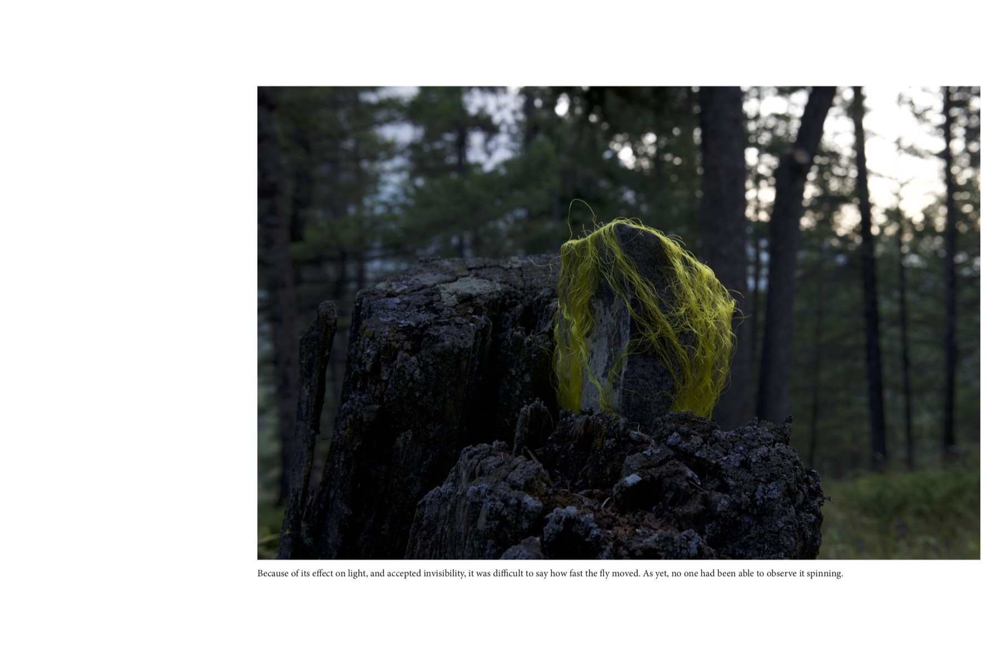
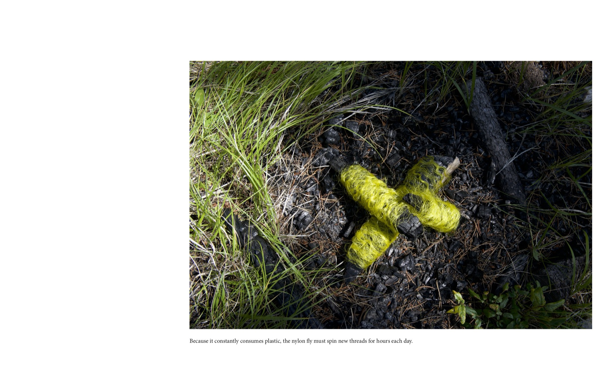
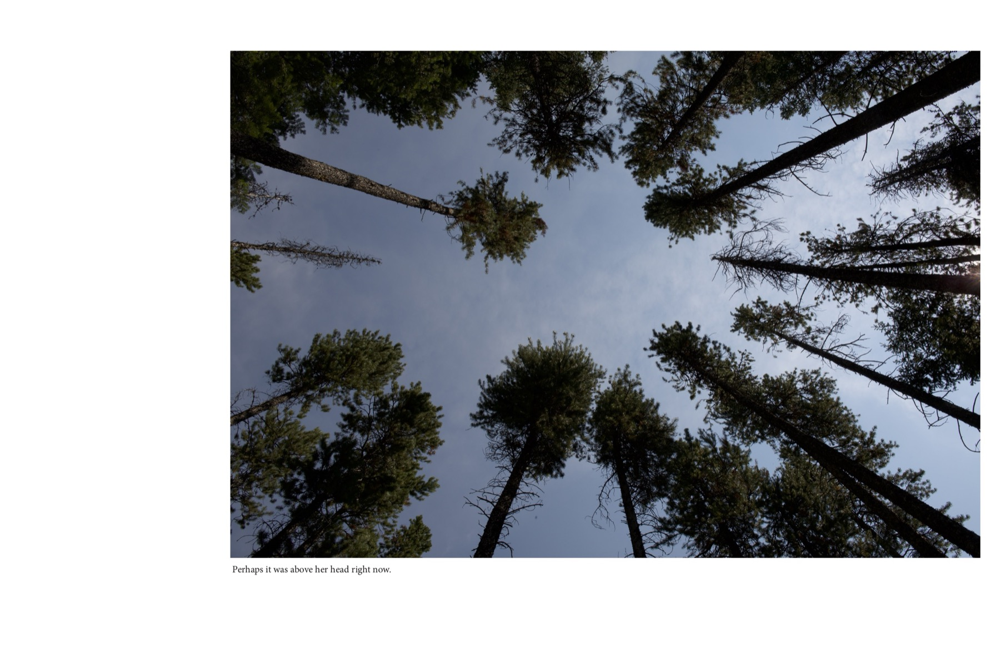
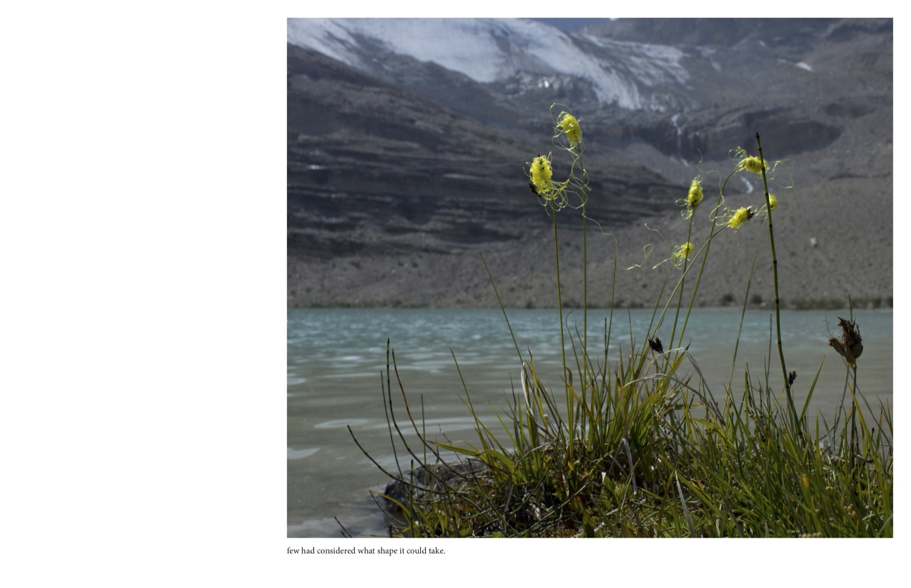
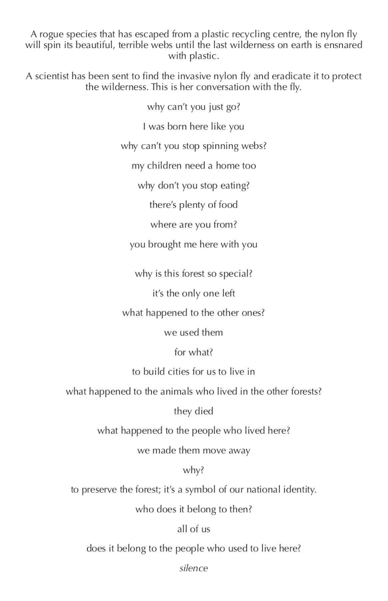